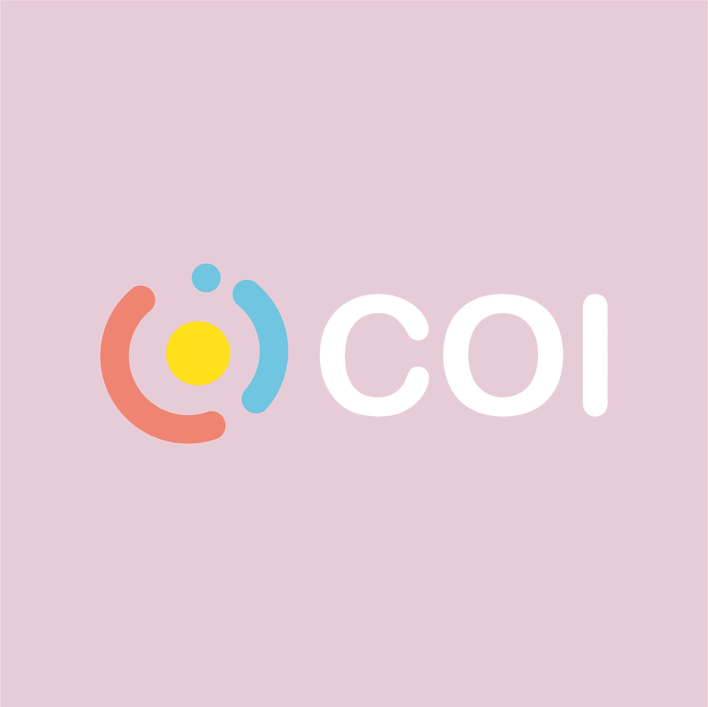
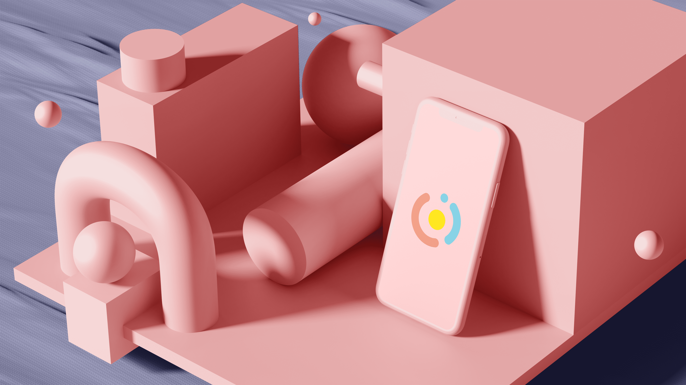
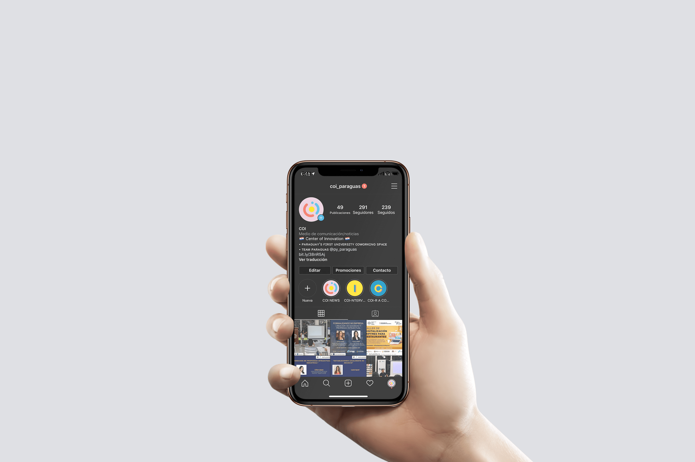
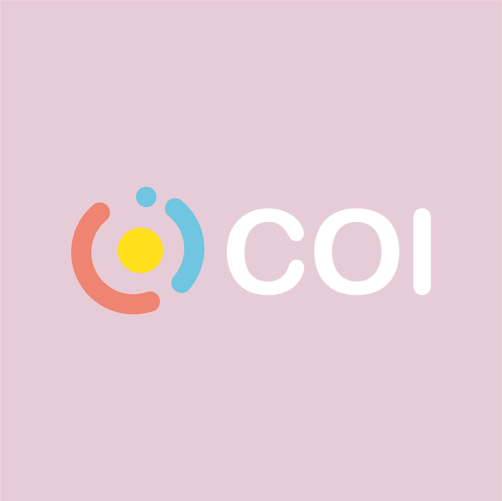
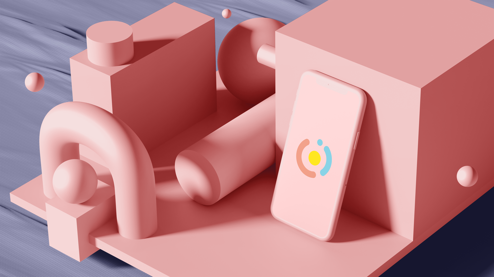
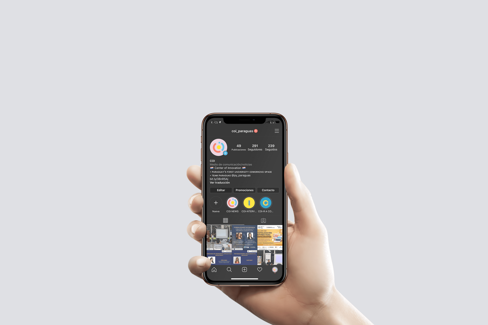

파라과이 대학교 최초 창업 지원공간 'COI'의 외-내부 공간 그래픽과 메인 로고를 작업했다. 'COI'는 'Center Of Innovation'의 약자이자 서식지에 따라 성체 크기가 결정되는 비단잉어 코이(KOI)에서 모티브를 얻은 이름이다. 코이의 서식지인 바다는 하나의 연속적인 선을 지니지만, 끊임없는 운동을 통해 불연속적으로 형태를 달리한다. 이러한 바다의 가변적인 움직임을 모티브로 그래픽을 작업했다. 남미의 태양열에 적합한 특수재질 차단재로 제작된 약 10m의 유리벽 그래픽은 본 공간의 취지에 따라 제약된 선을 넘어 바다로 나아가고자 하는 예비 창업가들의 희망을 직관적으로 표현했다. 공간 내 약 2m의 내부 그래픽은 바다의 파형을 추상적으로 시각화 하였고, 아이디어를 공유할 수 있는 라운지 공간에 환기를 불러 일으킨다.


 




